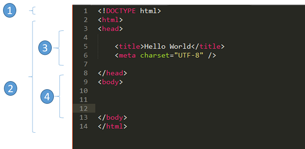
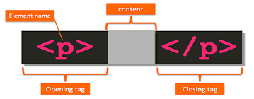

Introduction
HTML est un acronyme, signifiant HyperText Markup Language. C’est un langage de codage utilisé pour définir des parties de pages Web ou d’applications mobiles. Plus précisément, HTML permet de bien structurer une page Web. Il permet aux utilisateurs Web de créer des sections, des paragraphes et des liens à l’aide d’éléments, de balises et d’attributs. Il situe l’en-tête, le pied de page, les images, les graphiques, les vidéos dans la page. HTML est un langage standard de l’industrie. Il peut être compris par tous les navigateurs Web. Il est également la norme universellement acceptée pour rendre les sites Web « trouvables » par les moteurs de recherche.
Les Fondations de HTML5
Les Balises
Un paragraphe et un titre sont bien différenciés par un navigateur Web. C’est parce que chacun possède sa propre balise HTML. Les balises HTML ressemblent à ceci : h1, h2,...h6 , represente les titres ; p represente les paragraphes. Leurs utilisations permet la création des « éléments », composés de trois parties principales dont la balise d’ouverture, le contenu et la balise de fermeture. La Balise d’ouverture est utilisée pour indiquer où un élément commence à prendre effet,Le Contenu est la partie que les utilisateurs voient et Quant à la balise de fermeture, elle ressemble à la balise d’ouverture, mais avec une barre oblique avant le nom de l’élément pour terminer un paragraphe. Concernant les médias, les images utilisent les balises img et les vidéos les balises video. La plupart des éléments ont une balise d’ouverture et une balise de fermeture, mais pas obligatoirement. Actuellement, il existe 142 balises HTML disponibles. Même si certains d’entre eux ne sont plus pris en charge par les navigateurs, les apprendre est toujours important
Les Elements
Par ailleurs, les éléments peuvent également inclure les méta-éléments et les éléments structurels. Les méta-éléments sont des éléments HTML que les utilisateurs ne voient pas lorsqu’ils visitent une page Web. Ils donnent aux navigateurs Web des informations supplémentaires sur la page comme les mots-clés, l’auteur du document, l’heure et la date de la dernière modification. Les éléments structurels sont les éléments HTML utilisés pour organiser le contenu de la page Web.
Les Attributs
Enfin, on peut ajouter aux balises HTML des attributs. Ce sont des instructions qui permettent de fournir des informations supplémentaires sur les éléments. Par exemple, un élément HTML tel qu’un paragraphe peut avoir un attribut indiquant son alignement (à gauche, au centre ou à droite). Ils sont inclus dans la balise d’ouverture et composés de deux sections : un nom et une valeur d’attribut. Le nom identifie les informations supplémentaires qu’un utilisateur souhaite ajouter et la valeur donne des spécifications supplémentaires.
Le Squelette HTML5
Ainsi toute page ecrite en HTML doit comporter une certaine structure, un (squelette) qui sea toujours le meme.Ce squelette est bien evidemment constituer de divers elements. Tout d'abord, toute page HTML5 doit commencer par la déclaration de ce qu'on appelle un 'DOCTYPE'. Le DOCTYPE comme son l'indique, sert à indiquer le type de document.Dans notre cas, le type de document est HTML. On ecrira donc (voir image).
Les Paragraphes
L'élément HTML P représente un paragraphe de texte. Les paragraphes sont généralement représentés comme des blocs et séparés par un espace vertical, leur première ligne est également parfois indentée. Les paragraphes sont des éléments blocs. (voir image)
Les elements en blocs
Éléments de niveau bloc
Un élément de niveau bloc commence toujours sur une nouvelle ligne et les navigateurs ajoutent automatiquement un espace (une marge) avant et après l'élément.
Un élément de niveau bloc occupe toujours toute la largeur disponible (il s'étend aussi loin que possible vers la gauche et la droite).
L'élément <div> est un élément de niveau bloc.
<p>Bonjour le monde</p>
<div>Bonjour le monde</div>
Voici les éléments de niveau bloc en HTML :
<address>
<article>
<aside>
<blockquote>
<canvas>
<dd>
<div>
<dl>
<dt>
<fieldset>
<figcaption>
<figure>
<footer>
<form>
<h1>-<h6>
<header>
<hr>
<li>
<main>
<>
<noscript>
<ol>
<p>
<pre>
<section>
<table>
<tfoot><ul>
<video>
Les elements inline